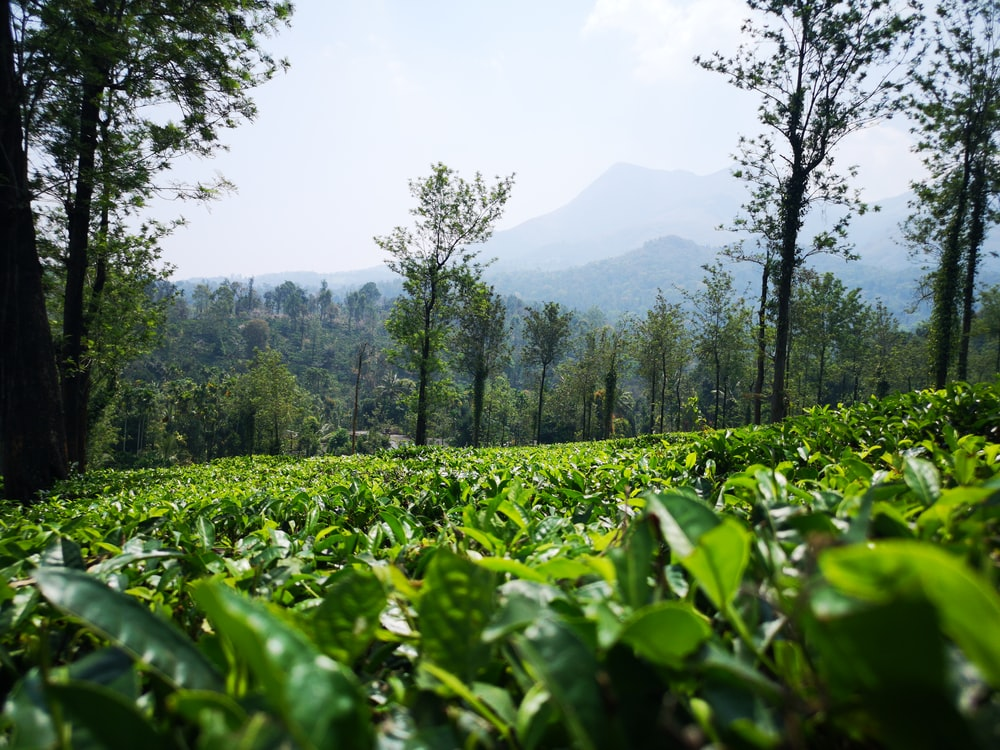
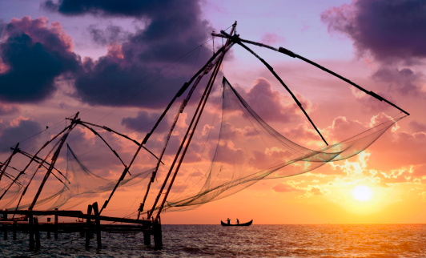
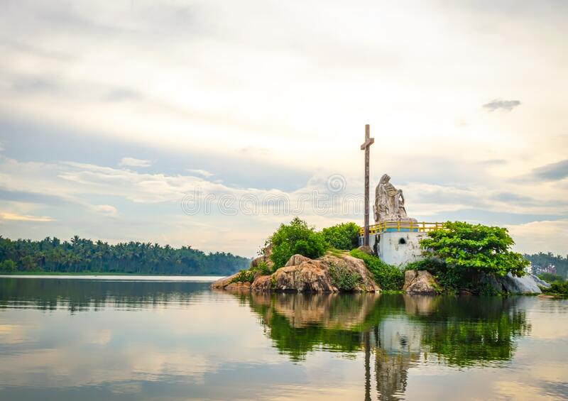
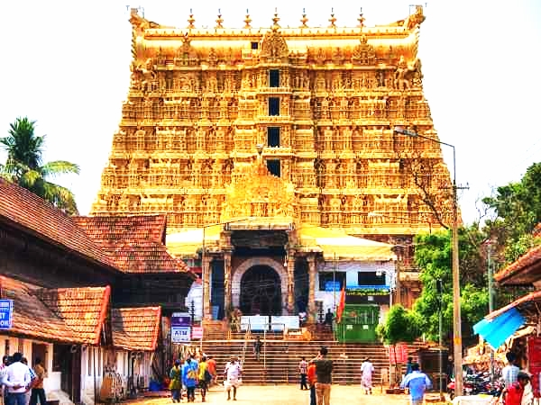

Munnar

"Sprawling tea plantations surround the serene hills of Munnar, which attract adventure travellers hungry for paragliding, treks to Anaimudi (South India's highest peak) and hikes originating at the confluence of three mountain streams. The stone Christ Church, built by the British in 1910, is adorned with renowned works of stained glass, and Eravikulam National Park, about 10 miles away, is home to equally colourful wildlife, including the endangered Nilgiri Tahr (ibex), ruddy mongoose and 120 bird species.The resplendent tea plantations in Munnar are like a slice of haven plucked from the skies above. Nestled 2 km away from Munnar amidst beautiful hills and lush green jungles, this pristine waterfall makes for romantic escapades and picnics site. "
Alleppey

"Officially called Alappuzha, Alleppey is the picture-perfect place known for its beautiful backwaters and the houseboats offering overnight stays. The coastline of Alleppey offers some of the best beaches in Kerala with water sports during the dry season.Alleppey is located close to Kochi in the South Indian state of Kerala. Its palm-fringed inter-connect network of canal backwaters attracts a lot of tourists from all over the world. Coupled with other beautiful places in Kerala like Munnar and Thekkady, Alleppey is often considered for a honeymoon or for a great family vacation. There are plenty of houseboats, homestays, and rejuvenating Ayurvedic resorts that make staying in Alleppey brilliant. The houseboats pass through the serene backwaters, where you can catch glimpses of green paddy fields, choir-making activities, and witness the life of locals in Kerala."
Wayanad
"Replete with waterfalls, historical caves, comfortable resorts and homestays, Wayanad in Kerala is famous for its spice plantations and wildlife. Walking through the sprawling spice plantations, trekking to the pre-historic caves and experiencing a resort holiday are one of the many things you can do to get a taste of Wayanad.Wayanad is best known for the wildlife reserves - Wayanad wildlife reserve which is home to an exquisite variety of flora and fauna. Wayanad wildlife reserve is an integral part of the Nilgiri biosphere reserve peacefully located amidst the serene hills of Western Ghats. Wayanad homes a wide variety of wildlife like elephants, leopards, and bears. Wayanad is a perfect weekend idea from the cities of South India."
Kochi
"Situated on the southwest coast of India, Kochi or Cochin is a commercial port city with a trading history that dates back to at least 600 years. Called the Queen of the Arabian Sea, the city is Kerala's financial, commercial, and industrial capital.A gaggle of islands interconnected by ferries, this cosmopolitan town has upmarket stores, art galleries and some of the finest heritage accommodations. In a true vintage-meets-future fashion, restaurants and shopping hubs crowd Ernakulum, Jew Town and Fort Kochi along with palaces, beaches, temples, and heritage sites. Kochi is also an important place to see Kathakali and Kalarippayattu performances and the annual Biennale Festival."
Poovar
"Well-known for its clean and golden sandy beach, Poovar is an isolated but spectacular and beautiful coastal village located in the state of Kerala. The holiday place is known for its serene beaches that bewitch thousands of visitors from all over the world.It is an unspoilt eco-tourism spot in Kerala, which is enfolded by the backwaters and one can spend a great time here.The natural beauty and blue lagoons make Poovar an ideal tourist holiday destinations in Kerala.This beautiful sighting place offers a number of leisure facilities to the travelers. Poovar lies at the mouth of River Neyyar and is populated by the fishing community.Poovar is an admiring wonder with pleasurable weather, exotic flora and fauna comprising a huge variety of spices, banana groves and swaying coconut trees."
Sree Padmanabhaswamy Temple,Thiruvananthapuram
"One of the most famous temples in Kerala, Sree Padmanabhaswamy Temple is situated in Thiruvananthapuram. Done up in Dravidian style of architecture, the temple is dedicated to Hindu God Vishnu and dates back to 8th century. This eminent shrine is situated in the East Fort in Trivandrum and it is amongst those 108 Vishnu temples or Divya Desam.Undoubtedly, one of the finest specimens of Dravidian architecture, Sree Padmanabhaswamy Temple is the most famous temple in Kerala. The presiding deity here is Lord Vishnu who is seen reclining on Anantha, the hooded Serpent. It is reckoned that the foundation of the temple is so old that it has been mentioned in holy Hindu sculptures like Skanda Purana and Padma Purana. Infact, the Thiruvananthapuram City have got its name from the presiding deity of this temple (Anantha)."